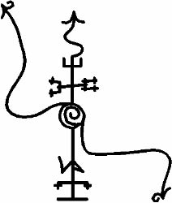

Ve bu da PAZUZU’yu gelmeye zorlayacak Mühürdür:

Menfurluğun bütün Tanrıları ve Ruhları arasında, AZAG-THOTH’u çağırmanın ne yararı ne de kazancı vardır, çünkü o Kesinlikle Delidir. Savaşta görüsüz kılınmıştır, KAOSUN Tanrısıdır ve rahip onda herhangi bir fayda bulamaz. Aynı zamanda, bir kez çağrıldığında kontrol etmek için fazla güçlüdür ve Kapıya geri gönderilmeden önce aşırı bir mücadele verir, yalnızca kuvvetli ve yetenekli bir majisyen onu uyandırmaya cesaret edebilir. Bu nedenle, Mührü burada verilmemiştir.
Menfurluğun Ruhları arasında, yalnızca KUTULU çağrılamaz, çünkü o Uyuyan Tanrıdır. Majisyen onun üzerinde güç kurmayı umamaz, ama ona tapılması ve onun için uygun kurbanlıkların verilmesi mümkündür, böylelikle yeryüzüne çıktığı zaman senin canını bağışlar. Kurban zamanları MARDUK’un uyuma zamanları ile aynı olmalıdır, çünkü bu, Yüce KUTULU’nun hareket ettiği zamandır. Ve o Dünyanın en yeğin Ateşi ve Bütün Majilerin Gücüdür. Gökyüzünün Menfurluğu ile birleştiğinde, TIAMAT bir kez daha dünyayı yönetecektir!